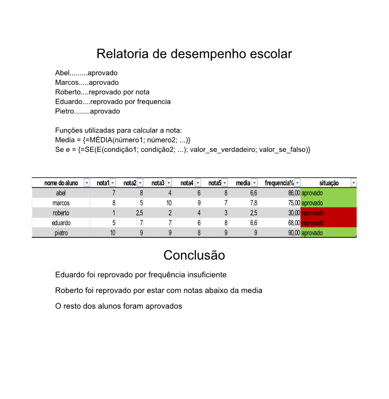

Fundamentos de Tecnologia da Informação:
O que é o Hardware?
Hardware de computadores é o conjunto de peças físicas que formam um computador — tudo aquilo que você pode tocar: placas, cabos, chips, memória, tela, teclado, gabinete etc. Ele funciona junto com o software, que são os programas.
A placa-mãe é a peça principal do computador. Ela funciona como uma “central de conexão”, onde todos os outros componentes são instalados e se comunicam entre si. Nela ficam os encaixes para o processador, memória RAM, placa de vídeo, portas USB, armazenamento, entre outros.
O processador é o “cérebro” do computador. Ele executa instruções, faz cálculos e coordena todas as operações do sistema. Quanto mais rápido e eficiente ele for, mais rápido o computador consegue realizar tarefas como abrir programas, rodar jogos, calcular dados e processar informações.
A memória RAM é a memória de trabalho do computador. Ela guarda temporariamente os dados e programas que estão sendo usados naquele momento.
Uma GPU (Graphics Processing Unit) é a placa de vídeo ou processador gráfico do computador. Ela é responsável por criar e processar imagens, vídeos, animações e gráficos em geral.
O que um SO
Um sistema operacional (SO) é o software principal que controla todo o funcionamento do computador. Ele faz a comunicação entre o hardware (peças físicas) e os programas que você usa.
Windows
Linux
macOS
Android
O que é o sistema de arquivos?
O sistema de arquivos é a forma como o sistema operacional organiza, armazena e localiza arquivos dentro de um disco (HD, SSD, pen drive etc.). Ele define como pastas são criadas, como dados são gravados e como o computador sabe onde cada arquivo está.
No modo texto, você usa comandos para navegar e manipular arquivos. Não há janelas ou ícones, só texto.
O usuário digita comandos e o sistema responde em texto.
Esse modo é direto, rápido e usado muito por administradores e programadores.
No modo gráfico, tudo é visual. Você navega pelos arquivos usando janelas, ícones, pastas e cliques do mouse.
Para copiar ou mover algo, basta arrastar com o mouse. O sistema de arquivos é o mesmo — apenas a forma de interação muda.
O que é software de escritório?
Software de escritório é um conjunto de programas usados para tarefas do dia a dia em empresas, escolas e trabalhos administrativos. Eles ajudam a criar documentos, planilhas, apresentações, organizar informações e comunicar-se.
exemplos
Usado para criar textos, como cartas, trabalhos escolares, relatórios e documentos profissionais.
Utilizado para montar planilhas, cálculos, gráficos, tabelas e análise de dados.
Serve para criar apresentações com slides, imagens, animações e gráficos, muito usado em aulas, reuniões e palestras.
